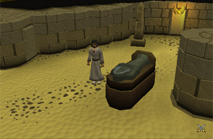
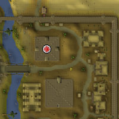
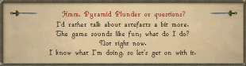
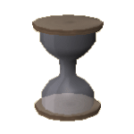
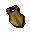
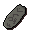
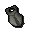

")
Pyramid Plunder (Members)
Introduction | Location | Requirements | Recommended Items
Plundering the Pyramid | Rewards | Development Team
Plundering the Pyramid | Rewards | Development Team
Pyramid Plunder is only accessible by RuneScape Members. Please subscribe to get this feature.
Please note this is a 'Dangerous' area. If you die, you will lose your items.
You must have started Icthlarin's Little Helper to gain access to Pyramid Plunder.
Introduction

Pyramid Plunder is a Thieving-based game, in which you enter a pyramid in order to steal its riches. There are eight chambers with increasingly valuable treasures to be plundered, but the ancient Guardian Mummy of the tomb is a cunning beast and has hidden as many traps as he could find.
Location

There are several ways of getting to Sophanem. Those bold enough might like to try trekking all the way through the desert from the Shantay Pass. If you decide to approach this way, you are advised to bring the right supplies with you: desert clothes, a waterskin and a knife (to extract water from cacti along the way).
Otherwise, you can catch one of Ali Morrisane's flying carpets from Pollnivneach for the small fee of 200 coins.
Requirements
You must have a Thieving level of 21 to enter the Pyramid of Jalsavrah.
Each chamber requires successively greater Thieving levels, so to enter the second treasure chamber you will need 31 Thieving, the third chamber requires 41 Thieving, and so on. The eighth chamber requires a Thieving level of 91 to enter.
Recommended Items
Although you could probably get by without them, it is a good idea to take some food and an antipoison potion with you, as there are many traps, some of which are poisoned.
Some urns contain snakes, so you might like to consider bringing along equipment to charm them, which will save some of your antipoison potions for the other poisonous snakes.
A lockpick will also prove useful for picking the locks on the doors between chambers.
Plundering the Pyramid
Once you have made your way to the Pyramid of Jalsavrah you can either talk to Tarik, who will explain his experiences of the Pyramid to you and warn you of some of the dangers, or you can simply start searching for the real entrance to the tomb.
 The Pyramid has four doors - one on each side - but only one of these is authentic. You will know that you have found the true entrance when you see the Guardian Mummy standing in the centre of the chamber.
The Guardian Mummy will explain how the Pyramid works and what you can do with the treasures. When you are ready to begin, click 'I know what I'm doing - let's get on with it'. You will be transported into the first chamber of the tomb.
The game lasts for five minutes, during which time you can search any of the urns, chests and sarcophagi that are scattered throughout the chambers. In the earlier chambers you are more likely to find pottery artefacts and ivory combs. The further you go on, the more likely you are to find stone items and, in the later chambers, gold versions of the same artefacts.
Before you set about looting each treasure room, though, you will need to deactivate a trap. This requires you to click on the closest section of 'trapped' wall. If you forget to do this, or fail to deactivate it, you will take a small amount of damage and be pushed back to the start of the trapped section.
Each urn, chest and sarcophagus requires a check against your Thieving level. The lower your Thieving level, the more likely you are to trigger a trap or release a creature. This may happen several times with the same vessel before your clumsy hands grasp the treasure within.
Sometimes you will wake a mummy resting in a sarcophagus. These are high level monsters and can do a great deal of damage to lower-level players. It's a good idea to avoid opening sarcophagi if your combat level is not up to dealing with them.
Once you have finished rummaging through the ancient urns and stealing trinkets from the chest and sarcophagus, or if you simply want to head for the greater treasures, you may set about picking the locks on the four doors in the treasure room. Only one of these doors leads to the next chamber, the others are dead ends.
 You can see how much time you have left by looking at either the time bar or the hourglass, both of which are in the top-right corner of the screen. Which room you are currently in is also displayed here. Once your five minutes are up you will be transported outside the Pyramid. You can then make your way to Simon Templeton at the Agility Pyramid to sell your treasures.
If you have reached a certain stage in Dealing with Scabaras, then talked to the Guardian Mummy, you will be able to sell Simon noted pottery, stone and ivory artefacts from the pyramid.
Rewards
| Treasure | Value in Coins |
![[image]](../../img/main/kbase/minigames/pyramid_plunder/pp_comb.gif) Ivory comb |
50 |
|  Pottery scarab |
75 |
![[image]](../../img/main/kbase/minigames/pyramid_plunder/pp_pottery_statuette.gif) Pottery statuette |
100 |
|  Stone seal |
150 |
|  Stone scarab |
175 |
![[image]](../../img/main/kbase/minigames/pyramid_plunder/pp_stone_statuette.gif) Stone statuette |
200 |
![[image]](../../img/main/kbase/minigames/pyramid_plunder/pp_gold_seal.gif) Gold seal |
750 |
![[image]](../../img/main/kbase/minigames/pyramid_plunder/pp_gold_scarab.gif) Gold scarab |
1000 |
![[image]](../../img/main/kbase/minigames/pyramid_plunder/pp_gold_statuette.gif) Gold statuette |
1250 |
![[image]](../../img/main/kbase/minigames/pyramid_plunder/pp_sceptre.gif) On top of these treasures, though, you may be fortunate enough to find a jewelled golden sceptre, formerly the property of an ancient king. This sceptre is imbued with certain magical properties that will transport the bearer to any of the three great pyramids: Jalsavrah, Jaleustrophos and Jaldraocht.
On top of these treasures, though, you may be fortunate enough to find a jewelled golden sceptre, formerly the property of an ancient king. This sceptre is imbued with certain magical properties that will transport the bearer to any of the three great pyramids: Jalsavrah, Jaleustrophos and Jaldraocht.
Jalsavrah is the tomb in which you found the sceptre, and this teleport will take you directly into the Guardian Mummy's presence.
Jaleustrophos is the Agility Pyramid, and will deposit you near Simon Templeton's camp.
Jaldraocht is the pyramid that you must go to if you wish to change your spellbook to Ancient Magicks - provided you have already completed Desert Treasure, of course.
The sceptre only holds three charges, but you can recharge it by giving the Guardian Mummy a number of artefacts from within the pyramid. You will need 24 pottery or ivory artefacts, 12 stone artefacts or 6 gold artefacts to recharge the sceptre.
Development Team
Developer: Chihiro Y
Graphics: James W
QA: Kevin D
Audio: Ian T

More articles in
Other
|
|